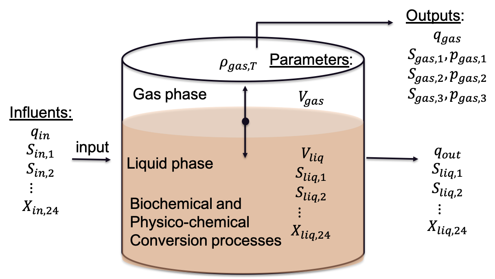

Anaerobic Digester Model #1 Fast (ADM1F)¶
Anaerobic digestion (AD) process converts organic wastes into biogas. Biogas can generate heat and electricity through a cascade of biochemical reactions and has been adapted by various facilities and industries to treat and recover energy from high-strength liquid or solid waste streams. Anaerobic Digestion Model 1 (ADM1) is a mathematical model that describes the stoichiometry and kinetics of the essential biochemical reactions in AD. This repository includes C++ version of the Matlab/Simulink 1 version of the ADM1 model and the solid retention time (SRT) version 2. The C++ version of the model is computationally more efficient than its Matlab/Simulink predecessor. We called this version of the model Anaerobic Digestion Model 1 Fast (ADM1F).
References
- 1
- 2
Zhu et al, in prep. A Novel Core-shell ADM1 model allows rapid optimization of membrane anaerobic digestion processes
Acknowledgements
The research was supported by the U.S. Department of Energy, Office of Energy Efficiency and Renewable Energy, Bioenergy Technologies Office, under contract DE-AC02-06CH11357.